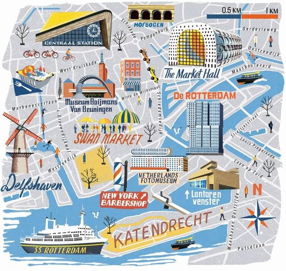

Роттердам
Роттердам представляет собой резкий контраст Амстердаму почти по всем направлениям. Это Голландия, устремленная ввысь и вперед. И не только архитектурными прямыми линиями и небоскребами, но и экономической активностью. Это не тусовочный, непраздничный, будничный город. Роттердам заслуживает скорее поездки на один день, чтобы посмотреть, как далеко шагнула голландская архитектурная мысль. Еще в Роттердаме есть несколько достопримечательностей музейного характера, но выдающихся среди них, пожалуй, нет ни одной. Экскурсия в порт (второй в мире по грузообороту), действительно мощно впечатляющая, но опять же – на любителя. А доехать сюда из Амстердама элементарно – 40 минут на поезде. Из Гааги с 2006 года вообще можно приехать на скоростном трамвае. Можно приехать на поезде и из аэропорта Схипхол (полчаса). Как и в столице, в Роттердаме есть проблемы с парковками в центре. Единственное, чем Роттердам компенсирует свой неуют, так это обилием парков. Хотя в Гааге их еще больше. Но обо всем по порядку... Роттердам стоит на берегу Нового Мааса (Nieuwe Maas) – это один из рукавов устья реки Маас. Центр города располагается на северном берегу, основные жилые и промышленные районы – на южном. Впрочем, тут уже нельзя понять, где Рейн, а где Маас – обе реки почти что сливаются, следуя параллельным курсом к морю. Название Роттердам означает «дамба на реке Роттер» – впрочем, этого маленького рукава речной дельты уже нет. История города типична для остальной Голландии – поселение в виде рыбацкой деревни возникло в начале X века, в 1260-х годах построили дамбу, а в 1340 году Роттердам получил статус города.
